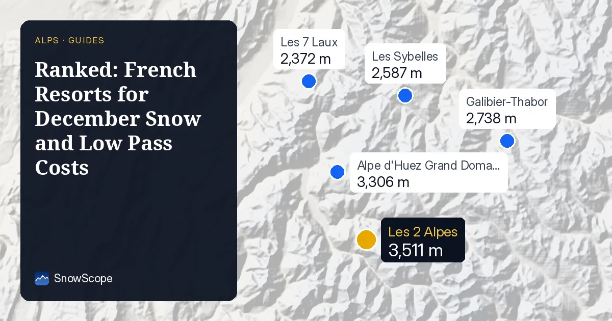

Ranked: French Resorts for December Snow and Low Pass Costs
Les Karellis, Les 2 Alpes and Montgenèvre lead our December ranking, pairing checked pass prices with reliable snow across 46 past winters. Seven Alpine resorts make the list, while Cauterets in the Pyrenees highlights the early-season snow gap.
See the live snow forecast for Les 2 Alpes in the SnowScope appSnow depth, powder alerts and the 3D map, free.
How we ranked snow against price
Low pass prices only save money when runs have snow. We ranked these eight resorts using checked winter 2026-27 rates alongside our snow history of 46 past winters.
We compared usual December depth, the 1 winter in 10 thin and deep figures, and weekly shares reaching 30 cm or 50 cm. Base lifts at 1219 m, 1284 m and 1406 m start thin, so height matters.

Top three for snow odds and price
Les Karellis ranks first for value and steady snow. Its adult 18+ pass costs 36.00 EUR (1 day) and 191.00 EUR (6 days) across 45 km of mapped runs and 14 mapped lifts. Mid-mountain at 2017 m holds 63 cm usual (28 cm thin, 117 cm deep), hitting 30 cm or more in 70 %, 85 %, 98 % and 98 % of past winters across the four December weeks.
Les 2 Alpes ranks second for high-altitude snow across 108 km of mapped runs and 46 mapped lifts up to 3511 m. Its 1284 m base averages 16 cm (0 cm thin, 39 cm deep), hitting 30 cm in just 2 % of past winters in 1-7 December. Ski mid-mountain at 2397 m (75 cm usual) or 3511 m (176 cm usual, 72 cm thin, 302 cm deep), where 50 cm or more arrives in 96 % to 100 % of past winters. Passes cost 68.00 EUR (1-day Freedom), 266.50 EUR (6 days), or 42 EUR on 28-29 November 2026.
Montgenèvre ranks third with a 1795 m base (62 km of mapped runs, 24 mapped lifts) holding 56 cm usual (22 cm thin, 102 cm deep) and 30 cm or more in 61 %, 76 %, 89 % and 96 % of past winters. Passes cost 45.50 EUR until 18 December 2026, then 56.00 EUR (301.00 EUR for 6 days). Mid-mountain snow grew from the first 15 winters to the last 15 winters in Les Karellis (55 cm to 64 cm), Les 2 Alpes (63 cm to 77 cm) and Montgenèvre (49 cm to 76 cm).
Four Alpine options in the middle
Valloire-Valmeinier (131 km of mapped runs, 34 mapped lifts) offers a 20 EUR pass on 5-6 December 2026, or 54.90 EUR (1 day) and 278.50 EUR (6 days). Its 1406 m base averages 29 cm (12 cm thin, 58 cm deep), while 2072 m holds 66 cm usual (31 cm thin, 120 cm deep). Serre Chevalier (157 km of mapped runs, 70 mapped lifts) charges 276.00 EUR for 6 days until 18 December 2026, then 345.00 EUR, with 30 cm usual at 1219 m (8 cm thin) and 111 cm at 2765 m.
Orcières Merlette (49 km of mapped runs, 26 mapped lifts; 6-day Pass Horizon from 227 EUR) holds 60 cm at 2278 m (21 cm thin, 108 cm deep). Vars-Risoul (131 km of mapped runs, 38 mapped lifts; 58 EUR 1-day, 298 EUR 6-day) averages 51 cm at 2177 m (20 cm thin, 97 cm deep). All four gained mid-mountain snow from the first 15 winters to the last 15 winters: Valloire-Valmeinier (55 cm to 69 cm), Serre Chevalier (46 cm to 63 cm), Orcières Merlette (51 cm to 61 cm) and Vars-Risoul (42 cm to 62 cm).
Cauterets shows the Pyrenees gap
Cauterets sits last because its snow lags behind its prices. Its mapped ski area has 25 km of runs and 9 mapped lifts (1725 m to 2420 m), with passes at 46 EUR (1 day) and 276 EUR (6 days).
Base depth at 1725 m is 23 cm usual (3 cm thin, 66 cm deep). Mid-mountain at 2072 m averages 33 cm (5 cm thin, 87 cm deep), hitting 30 cm in 43 % of past winters in 1-7 December and 8-14 December, 52 % in 15-21 December, and 67 % in 22-28 December. Top snow is 42 cm usual, while mid-mountain depth fell from 35 cm in the first 15 winters to 23 cm in the last 15 winters.
Best weeks to book in December
For 1-7 December, ski above 2017 m or choose high lifts like Les 2 Alpes at 3511 m (98 % chance of 30 cm or more) or Valloire-Valmeinier at 2738 m (98 %).
By 15-21 December, mid-mountain reaches 30 cm or more in 98 % of past winters in Les Karellis, Les 2 Alpes, Valloire-Valmeinier and Montgenèvre, before prices rise on 19 December 2026 in Montgenèvre and Serre Chevalier.
Tips for skiers
- Book before 19 December 2026 at Montgenèvre (45.50 EUR day pass) or Serre Chevalier (276.00 EUR 6-day pass) for lower rates.
- In 1-7 December, skip low bases at Les 2 Alpes (1284 m) and Serre Chevalier (1219 m) and ski higher lifts.
- Aim for 15-21 December for 98 % mid-mountain snow odds across the top Alpine resorts before holiday rates start.
- Book on the official resort site, and check the avalanche bulletin before going off-piste.
More maps (external sites)
References and credits
- Les 2 Alpes, official ski pass shop, prices 2026-27 www.skipass-2alpes.com/en/pricing
- Les 2 Alpes, official ski pass shop, opening weekend offer www.skipass-2alpes.com/fr/forfaits/ski
- Valloire, official ski pass shop (Galibier-Thabor), winter 2026-27 skipass.valloire.com/fr/
- Les Karellis, official prices 2026-2027 www.leskarellis.com/fr/tarifs-2026-2027-sans-lien
- Montgenèvre, official ski pass prices 2026-27 skipass.montgenevre.com/fr/tarifs-guichet
- Orcières, official ticketing, winter 2026-27 pass.orcieres.com/en/ticketing
- Risoul, official ski pass page, Forêt Blanche 2026-27 risoul.labellemontagne.com/fr/hiver/forfaits/risoul-foret-blanche/
- Risoul, official 6-day Forêt Blanche pass page 2026-27 risoul.labellemontagne.com/fr/hiver/forfaits/6-jours-foret-blanche/
- Serre Chevalier, official booking site, ski passes 2026-27 reservation.serre-chevalier.com/achetez-vos-ski-pass-serre-chevalier-et-autres-prestations.html
- N'PY, Cauterets official ski pass prices 2026-27 www.n-py.com/fr/cauterets/forfaits-ski
- SnowScope, December snow at three heights and today's snow map snowscope.app/
About these numbers
Snow numbers: SnowScope snow history, 46 past winters (1980-81 to 2025-26) at three heights of each resort (a model of the past corrected for height: an estimate for an area, not resort measurements); December figures computed from the daily depths of those winters. Snow now and the two-week outlook: SnowScope forecasts (outlook from ECMWF and GFS, a range, not a promise). Lifts and runs: OpenSkiMap mapping. Prices: the official resort pages listed below, read on 2026-11-13; prices can change, check before booking.
Cite this report
For research, teaching or the press: the numbers and charts are free to reuse under CC BY 4.0 with this citation.
SnowScope (2026), Ranked: French Resorts for December Snow and Low Pass Costs, https://snowscope.app/blog/en/2026/11/cheapest-snow-sure-ski-resorts-france-december-2026.html, accessed 2026-11-14
SnowScope (Atlas Labs). (2026, November 14). Ranked: French Resorts for December Snow and Low Pass Costs. SnowScope snow reports. https://snowscope.app/blog/en/2026/11/cheapest-snow-sure-ski-resorts-france-december-2026.html
BibTeX
@misc{snowscope2026cheapestsnowsureskiresor,
author = {{SnowScope (Atlas Labs)}},
title = {Ranked: French Resorts for December Snow and Low Pass Costs},
year = {2026},
month = nov,
howpublished = {\url{https://snowscope.app/blog/en/2026/11/cheapest-snow-sure-ski-resorts-france-december-2026.html}},
note = {Published 2026-11-14 13:29 UTC; accessed 2026-11-14}
}· CC BY 4.0 · Methods, data and tools →
Les 2 Alpes: snow and temperature by height, this winter vs last (tools) →
Follow Les 2 Alpes
Free: a message when fresh snow is coming, and the forecast every morning.
More snow reports

Montgenèvre has 56 cm of usual December snow at its base, giving weekend drivers deeper early cover than Sestriere across the border.

Les Karellis offers 45 km of runs and a 6-day adult pass for 191.00 EUR with a 98 % chance of snow mid-mountain in late December.

Ten European ski resorts ranked for December value, led by Les 2 Alpes with 75 cm of mid-mountain snow.